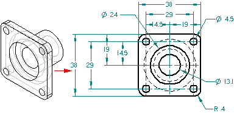
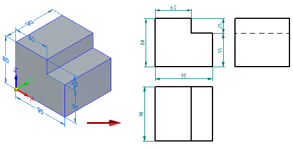
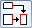
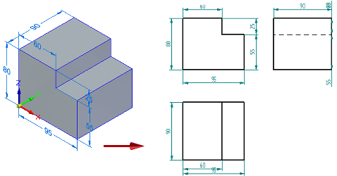

Retrieve Dimensions command
The Retrieve Dimensions command copies PMI dimensions and annotations from a 3D model to orthogonal and section drawing views. It also copies sketch dimensions from ordered sketches, and synchronous sketch dimensions that were not consumed through sketch migration.

You also can use this command to retrieve 2D view dimensions and place them on the drawing sheet.
Use the options on the Retrieve Dimensions command bar to specify what types of dimensions are retrieved.
Add or remove mode
You can retrieve dimensions and annotations or remove retrieved dimensions and annotations. The default mode is to retrieve them. You can change the mode using these buttons on the Retrieve Dimensions command bar:
-
Add Dimensions
-
Remove Dimensions
For more information, see Retrieve dimensions and annotations from the model.
Retrieving dimensions on multiple drawing views
By default, each dimension is retrieved into just one drawing view on the sheet. This eliminates duplicate dimensions.
No dimensions are displayed in the SIDE view, because they are already represented in the FRONT and TOP views.

However, you can retrieve linear dimensions to all of the drawing views, even when they are duplicated in other drawing views, by selecting the Multiple Views button

on the command bar. Linear dimensions are retrieved when they are fully visible in a drawing view, and when the model dimension plane or sketch plane is parallel to the drawing view.When the Multiple Views option is selected, then linear dimensions are retrieved into each drawing view that you select.

Dimension and annotation formatting
The retrieved dimensions and annotations are formatted with the dimension style you select on the Retrieve Dimensions command bar.